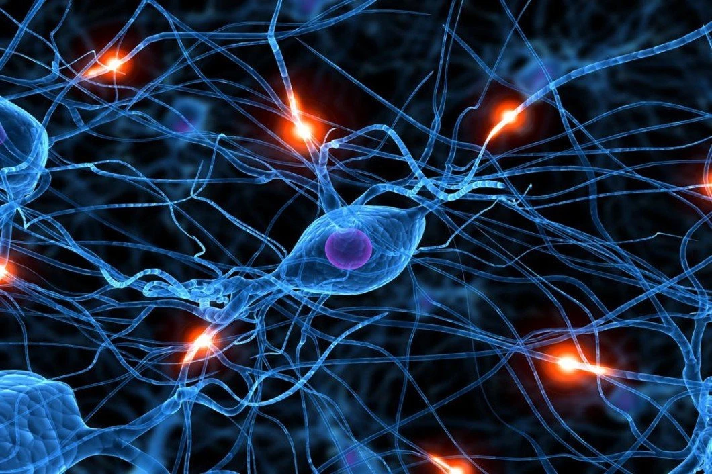

Üdvözöllek a Hopfield hálózatok világában
Átfogó útmutató a neurális hálózatokról és a Hopfield-hálózatokról.
Kezdjünk hozzá
Applikáció/programkód letöltése

Diplomamunka letöltése PDF formátumban
Vissza a tetejére